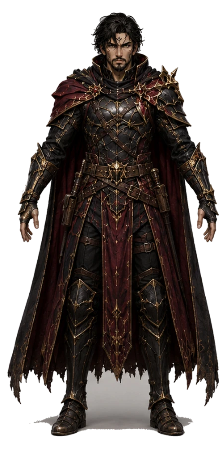
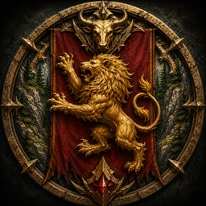
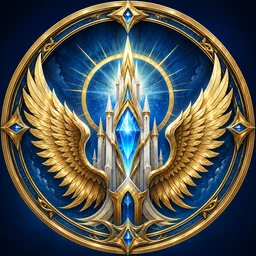
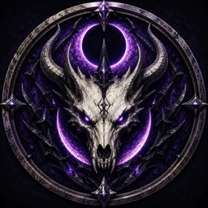
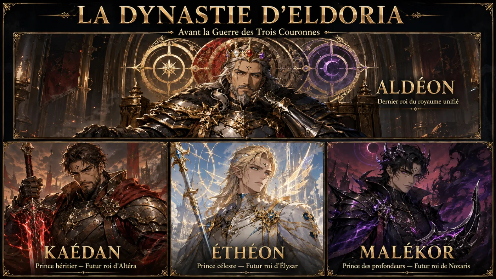
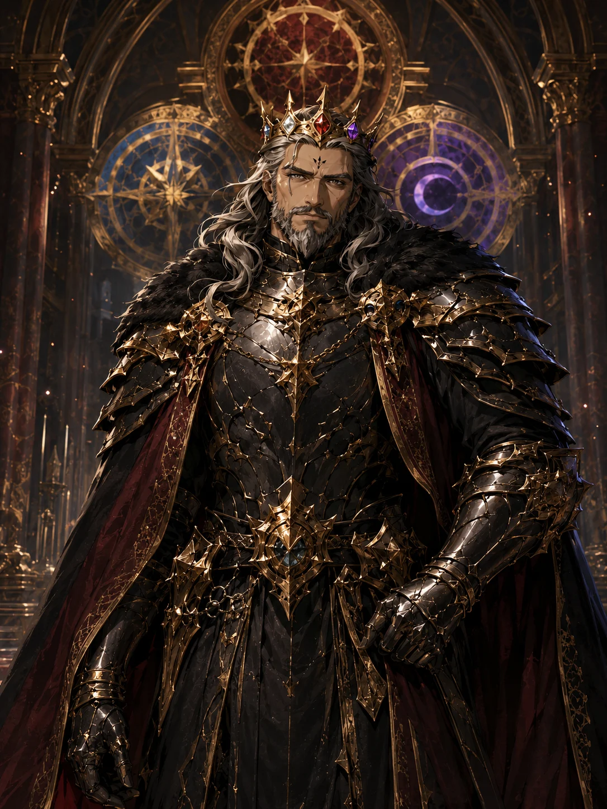
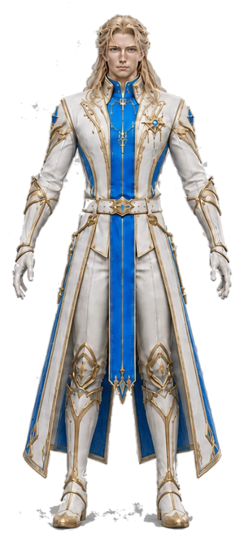
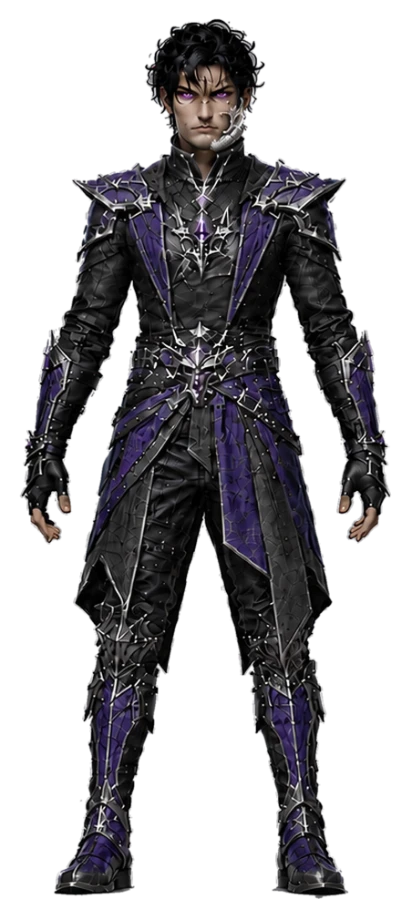
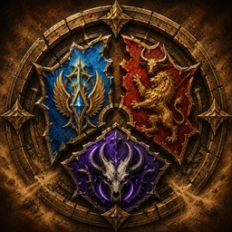

PRINCE HERITIER

KAEDAN
Désigné par son père. Contesté par ses frères. Il portera la couronne qu'on lui refuse.
FUTUR ROI D'ALTERA

ALTERALe Palais du Lion
ELYSARLe Royaume des Cieux
NOXARISLa Citadelle de l'EclipseELDORIA n'existe plus. À la mort du roi ALDEON, ses trois fils ont refusé de se plier au même trône — et le royaume s'est brisé en trois.
Avant la guerre, ALTERA, ELYSAR et NOXARIS n'existaient pas. Le territoire ne formait qu'un seul grand royaume : ELDORIA.
Un seul trône, une seule couronne, une seule armée. Les cieux, les terres rouges et les profondeurs répondaient au même nom. Ce que l'on appelle aujourd'hui trois royaumes n'était alors que trois provinces d'un même monde.
À sa tête régnait ALDEON, dernier roi du royaume unifié, et père de trois fils : KAEDAN, ETHEON et MALEKOR.


ALDEON meurt avant que ce récit ne commence. Il ne verra rien de la guerre que sa mort déclenche.
Sa volonté est claire : KAEDAN, l'aîné, est désigné héritier légitime du royaume. Pas encore roi — héritier. La couronne d'ELDORIA l'attend, et elle n'attendra jamais personne.
Car ETHEON et MALEKOR refusent de le reconnaître. Chacun des trois princes rallie sa part de l'armée, de la population et du territoire. En quelques mois, le royaume unifié cesse d'exister.
C'est la Guerre des Trois Couronnes.
Trois fils du même père. Trois refus. Trois royaumes nés d'une seule cassure — et un quatrième camp qui n'a jamais voulu choisir.

Désigné par son père. Contesté par ses frères. Il portera la couronne qu'on lui refuse.

Il ne reconnaît pas l'aîné. Il emmène les cieux avec lui et fonde son propre royaume.

Le dernier des trois. Il descend sous le monde et bâtit sa citadelle dans l'éclipse.
Il reste ceux qui n'ont pas suivi. Les anciens gardes royaux d'ALDEON, fidèles à une couronne qui n'existe plus, refusent de choisir entre les trois frères. Ce sont les EXILES — ils ne forment pas un quatrième royaume, seulement la mémoire de l'ancien monde.
Trois royaumes, nés le même jour et de la même cassure. Et ceux qui n'ont voulu d'aucun des trois.
Le royaume de KAEDAN, l'aîné, celui que son père avait désigné. Il a emmené avec lui les terres rouges, les forêts et la pierre.
Altera se bat avec la Braise : une énergie qui brûle dans la durée plutôt que d'éclater d'un coup. C'est le plus nombreux des trois royaumes.
Le royaume d'ETHEON, le prince céleste. Il n'a pas contesté par ambition mais par refus : il ne reconnaissait pas l'aîné.
Elysar combat par la Lumière — protections, soins, frappes nettes. C'est le royaume qui tient, là où les autres percent.
Le royaume de MALEKOR, le dernier des trois. Il est descendu sous le monde et a bâti sa citadelle dans l'ombre de l'éclipse.
Noxaris frappe par l'Eclipse : poisons, affaiblissements, coups portés dans le dos. On le voit rarement venir.

Ce ne sont pas un quatrième royaume. Ce sont les anciens gardes royaux d'ALDEON, restés fidèles à une couronne qui n'existe plus.
Quand la guerre a commencé, ils ont refusé de choisir entre les trois frères. Leur énergie est neutre : ils ne fracturent rien eux-mêmes — ils font détoner ce que les autres ont posé.
Chaque héros porte l'énergie de son royaume. Quand deux énergies différentes touchent le même ennemi, elles ne s'additionnent pas : elles se fracturent. C'est la mécanique qui donne son nom au jeu.
L'ennemi explose et blesse ceux qui l'entourent.
Des dégâts dans la durée, et les soins qu'il reçoit sont coupés.
L'armure se brise et tous les dégâts suivants sont amplifiés.
Les EXILES sont neutres : ils ne posent aucune énergie, mais ils déclenchent celles qui sont déjà là. Une équipe mélangée frappe plus fort qu'une équipe d'un seul royaume — c'est ce qui pousse à collectionner.
Chacun a son royaume, son rôle et son illustration. Cinq rôles se partagent le champ de bataille : Gardien, Briseur, Traqueur, Soutien, Soigneur.
Où en sont ces personnages. Cinquante-trois ont leur illustration finie et validée. Trente-et-un portent la mention « illustration provisoire » : leur carte définitive reste à peindre. Les kits de compétences sont écrits pour tous. En revanche, un seul personnage est aujourd'hui en cours de passage en 3D jouable : KAEDAN. Les autres n'existent encore que sous cette forme.
Des captures reelles du jeu en cours de developpement — pas des illustrations, pas des maquettes. Ce que tu vois ici tourne vraiment.
FRACTURE est en développement, version interne 0.5.2. Cette page dit ce qui existe vraiment et ce qui n'est encore qu'un projet — rien n'y est présenté comme terminé tant que ça ne l'est pas.
Les quatre camps, leurs blasons, leurs couleurs et le récit d'ELDORIA sont écrits et validés.
82 personnages illustrés, avec leur royaume, leur rôle et leurs compétences.
KAEDAN passe du dessin au modèle jouable. Sa planche technique est validée, la production a commencé.
Le terrain, la caméra et les premiers échanges de coups sont en place dans le moteur.
Il vérifiera la version, téléchargera les mises à jour et lancera le jeu. Il arrivera avec la première version jouable.
Campagne, tour scellée, invocations et affrontements entre joueurs. Rien n'est encore jouable publiquement.
Ce journal dit ce qui a été fait, avec sa date. Pas ce qui est prévu, pas ce qui est espéré.